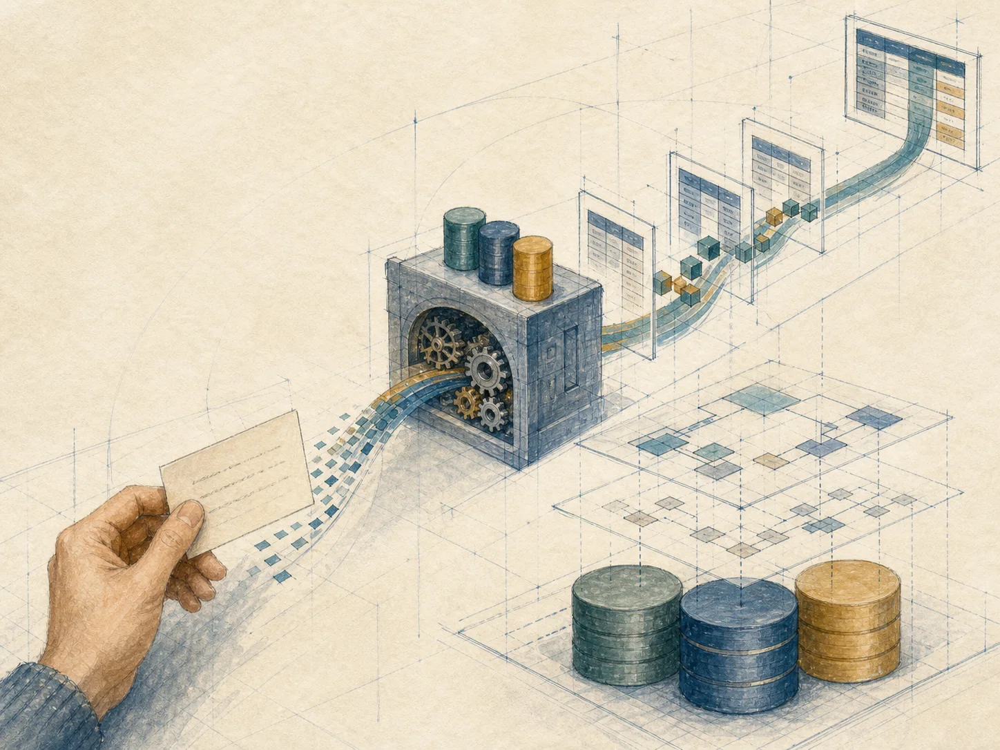
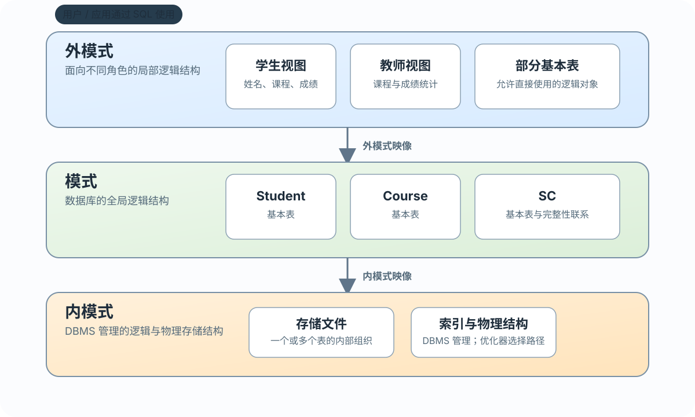

SQL 标准
为不同系统提供共同的语法与语义基础

用共同语言操作关系数据库
 VER. 2608.2
Built with impress.js
VER. 2608.2
Built with impress.js
SQL 把关系数据库的共同语言、使用方式和抽象层次连接起来
标准化让不同数据库系统能够共享一套语言基础
SEQUEL → System R 实现 → 改名为 SQL → ANSI / ISO 标准
| 节点 | 发生什么 | 教学意义 |
|---|---|---|
| 1974 | Boyce 与 Chamberlin 提出 SEQUEL | 关系数据库语言的早期原型 |
| System R | IBM 关系数据库原型实现 SEQUEL | 从研究走向系统 |
| 后来 | 名称简化为 SQL | 更易记忆，也便于形成统一称呼 |
| 1986—1987 | ANSI 与 ISO 相继通过标准 | 形成共同语言基础 |
阅读一条 SQL 命令时，先区分标准、实现与方言三个层次
为不同系统提供共同的语法与语义基础
通常只实现标准的一个子集，支持范围和数据类型也可能不同
在标准之上加入扩展、限制或不同的语法行为
遇到产品命令时，判断它是否属于标准、当前 DBMS 是否实现或属于厂商扩展；记录产品与版本，并查阅产品手册
SQL 统一承载定义、查询、操纵与控制
建立和改变数据库对象
从关系中得到结果
插入、修改和删除元组
安全性、完整性与并发控制
同一语言体系还参与事务处理、数据库维护和重构；具体命令和支持范围随标准及 DBMS 实现而异
用户说明逻辑对象、属性和条件；DBMS 决定执行路径
| 请求方式 | 用户需要说明 | 系统负责什么 |
|---|---|---|
| 过程化访问方式 | 访问路径、处理顺序和循环 | 用户自己组织访问过程 |
| SQL 非过程化 | 目标关系、属性和条件 | RDBMS 规划路径并执行 |
案例：查询选修 81002 的学生姓名和成绩。用户指定逻辑对象、目标属性和条件，不指定扫描哪个文件、使用哪条索引或如何循环
非过程化不是“没有执行过程”，而是把执行路径的选择交给 DBMS；存储结构变化时，逻辑请求通常可以保持稳定
查询、插入、删除和更新都可一次处理一组元组
查询一次得到一组元组；插入、删除或更新一次处理一组元组
查询结果仍然可以作为关系继续处理
用户按集合描述操作；DBMS 仍可逐行、通过索引或采用其他方式执行
SQL 可独立执行，也可通过接口或嵌入机制使用；核心语句结构一致
用户在交互环境中直接输入 SQL 命令操作数据库
Java、Python 程序通常通过驱动或 API 把 SQL 请求发送给 DBMS
由预编译器或特定机制把 SQL 写入高级语言程序
接口形式可以不同，但核心 SQL 语句结构基本一致；API/驱动调用不等于严格意义的嵌入式 SQL
语言简洁不等于功能简单
| 功能 | 核心动词 | 后续学习位置 |
|---|---|---|
| 数据定义 | CREATE、DROP、ALTER | 3.2 |
| 数据查询 | SELECT | 3.3 |
| 数据操纵 | INSERT、UPDATE、DELETE | 3.4 |
| 数据控制 | GRANT、REVOKE | 后续安全性章节 |
九个动词覆盖核心功能，不代表完整 SQL 只有九个动词。建立表、查询数据、修改数据、授予权限分别属于 DDL、查询、DML、DCL
用户通过基本表和视图使用逻辑数据，DBMS 管理内部存储

| 抽象层次 | SQL 中的对应 | 层次作用 |
|---|---|---|
| 外模式 | 视图和部分基本表 | 面向角色的局部逻辑结构 |
| 模式 | 基本表 | 数据库的全局逻辑结构 |
| 内模式 | 存储文件、索引及物理结构 | DBMS 管理的存储组织 |
基本表是模式中的逻辑关系对象；存储文件和索引属于内模式，不是一张表对应一个文件的固定关系。用户或 DBA 定义索引，DBMS 在数据变化时维护，优化器在查询规划时决定是否使用
用户可以把普通视图当作关系使用，但查询结果仍来自基础对象
模式中的逻辑关系对象，数据由 DBMS 持久化管理
保存定义，不独立保存查询结果；查询时从基础对象得到结果
为不同用户提供局部数据视图
3.2—3.6 依次把 SQL 的一类能力落实为可执行语句
模式、表、索引与数据字典
单表、连接、嵌套、集合与派生表
插入、修改与删除
判断与三值逻辑
定义、查询、更新与作用
SQL 是关系数据库的共同语言，也是用户进入三级模式的入口
标准提供共同基础，DBMS 实现子集，厂商可能增加扩展或差异
功能综合、非过程化、面向集合、统一使用方式且简洁易学
外模式、基本表和普通视图服务用户；内模式管理存储文件和索引
学习 SQL 既要理解标准概念，也要确认具体 DBMS 的实现差异；建立对象、查询数据、改变数据、授予权限分别属于 DDL、查询、DML、DCL